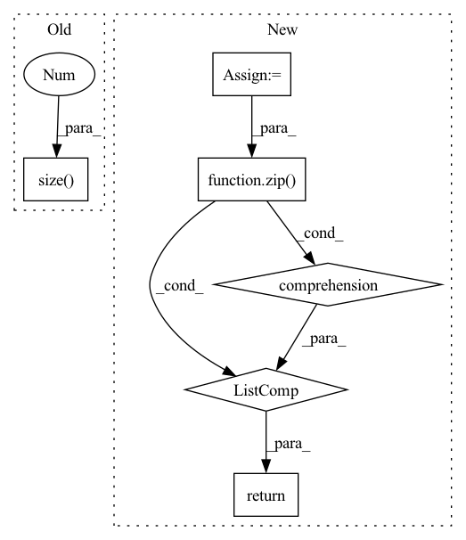

Pattern ID :3254
Before Change
def forward(self, score, target):
ph, pw = score.size(2), score.size(3)
h, w = target.size(1 ) , target.size(2)
if ph != h or pw != w:
score = F.upsample(
input=score, size=(h, w), mode="bilinear")After Change
def forward(self, score, target):
if config.MODEL.NUM_OUTPUTS == 1:
score = [score]
weights = config.LOSS.BALANCE_WEIGHTS
assert len(weights) == len(score)
return sum([w * self._forward(x, target) for (w, x) in zip(weights, score)] )
class OhemCrossEntropy(nn.Module):In pattern: SUPERPATTERN
Frequency: 3
Non-data size: 6
Instances Fragment ID: 10369022
Project Name: chenjun2hao/ddrnet.pytorch
Commit Name: 3ce340bc520946fb220e83075f6e015bbe87cfe5
Time: 2019-12-12
Author: hsfzxjy@gmail.com
File Name: lib/core/criterion.py
M Class Name: CrossEntropy
N Class Name: CrossEntropy
M Method Name: forward(3)
N Method Name: forward(3)
M Parent Class: nn.Module
N Parent Class: nn.Module
M File Name: lib/core/criterion.py
N File Name: lib/core/criterion.py
M Start Line: 20
M End Line: 28
N Start Line: 36
N End Line: 42
Before Change
def forward(self, pred, target):
log_prob = F.log_softmax(pred, dim=-1)
dist = torch.empty_like(pred).fill_(self.smoothing / (pred.size(-1 ) - 1))
dist.scatter_(dim=-1, index=target[..., None], value=(1 - self.smoothing))
loss = F.kl_div(log_prob, dist)
return lossAfter Change
self.vocab = vocab
def forward(self, pred: torch.Tensor, target: torch.Tensor, mask: torch.Tensor):
pred = pred.flatten(0, 1)
target = target.flatten(0, 1)
mask = mask.flatten(0, 1).float()
chunked_pred = torch.chunk(pred, chunks=self.chunk, dim=0)
chunked_target = torch.chunk(target, chunks=self.chunk, dim=0)
chunked_mask = torch.chunk(mask, chunks=self.chunk, dim=0)
log_prob = [F.log_softmax(p, dim=-1) for p in chunked_pred]
loss = [self.smoothed_loss(p, t, m)[None]\
for p, t, m in zip(log_prob, chunked_target, chunked_mask)]
loss = torch.cat(loss, dim=0).sum()
return loss / mask.sum()
def smoothed_loss(self, log_prob: torch.Tensor, target: torch.Tensor, mask: torch.Tensor) -> torch.Tensor:
dist = torch.full_like(log_prob, fill_value=self.smoothing / (self.vocab - 2)) Fragment ID: 10369019
Project Name: rick-mccoy/reformer-pytorch
Commit Name: 3411114d22e0bfcae2e106f5c82a3211da83f409
Time: 2020-02-29
Author: rickmccoy3141@gmail.com
File Name: model/labelsmoothing.py
M Class Name: LabelSmoothing
N Class Name: LabelSmoothing
M Method Name: forward(4)
N Method Name: forward(3)
M Parent Class: nn.Module
N Parent Class: nn.Module
M File Name: model/labelsmoothing.py
N File Name: model/labelsmoothing.py
M Start Line: 11
M End Line: 16
N Start Line: 13
N End Line: 24
Before Change
x = self.avgpool(x) // 1x1
features.append(x)
x = x.view(x.size(0 ) , -1)
x = self.fc(x)
return x
After Change
Normalizing the features and applying spatial resolution was taken from LPIPS and wasn"t mentioned in the paper.
images = torch.concat([x, x_rec], dim=0) // batch
features = self._forward(images)
features = [f.chunk(2) for f in features]
// diffs = [a * torch.abs(p[0] - p[1]).sum() for a, p in zip(self.alphas, features)]
diffs = [a * torch.abs(p[0] - p[1]).mean() for a, p in zip(self.alphas, features)]
// diffs = [a*torch.abs(self.norm_tensor(tf) - self.norm_tensor(rf)) for a, tf, rf in zip(self.alphas, true_features, rec_features)]
// diffs = [a * torch.mean(torch.abs(tf - rf)) for a, tf, rf in zip(self.alphas, features)]
return sum(diffs)
// return sum(diffs) / len(diffs)
Fragment ID: 10369017
Project Name: casualganpapers/make-a-scene
Commit Name: 89ba77e885ac1c12ac2d5df5a6b3da842e30bfe0
Time: 2022-05-26
Author: 61938694+dome272@users.noreply.github.com
File Name: losses/face_loss.py
M Class Name: ResNet
N Class Name: ResNet
M Method Name: forward(3)
N Method Name: forward(2)
M Parent Class: nn.Module
N Parent Class: nn.Module
M File Name: losses/face_loss.py
N File Name: losses/face_loss.py
M Start Line: 127
M End Line: 151
N Start Line: 163
N End Line: 177